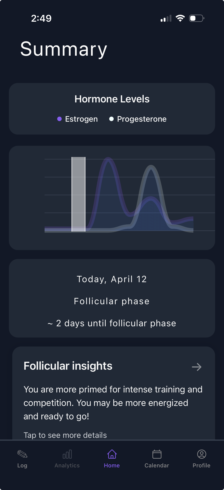
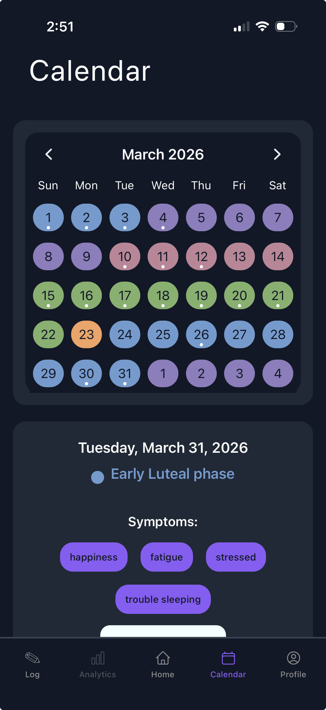
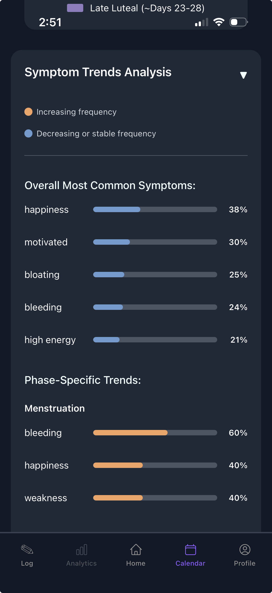
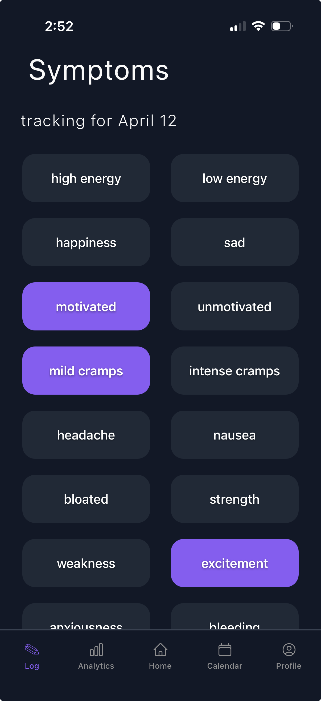
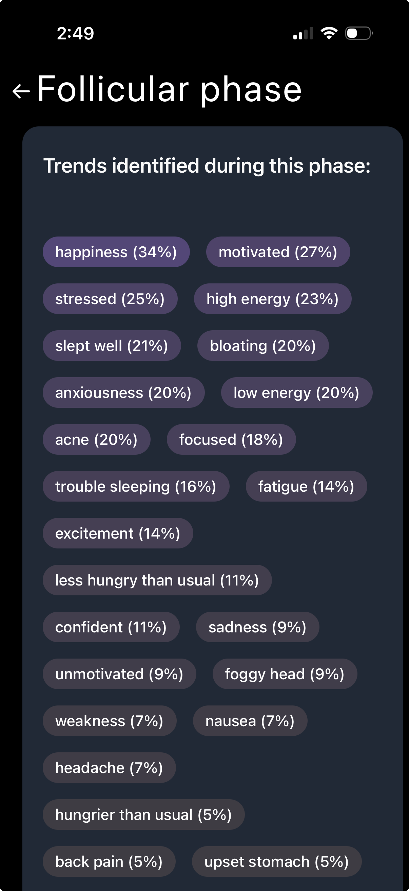
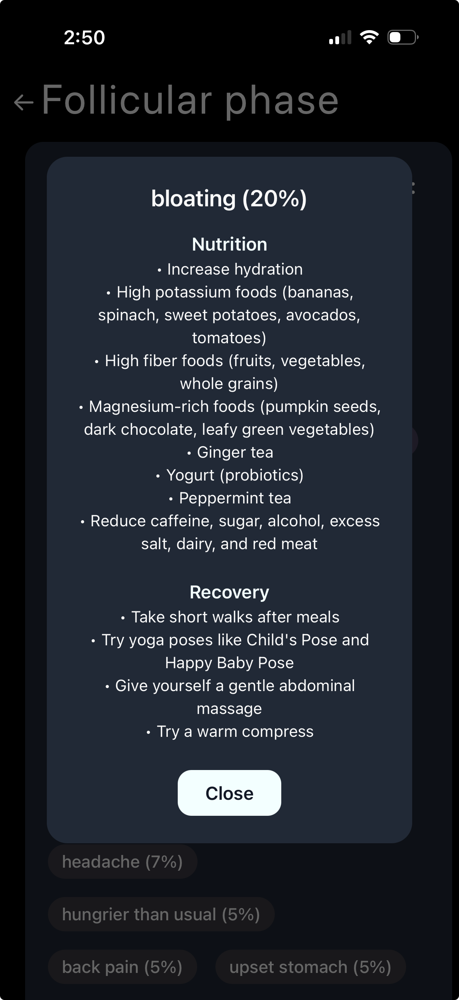
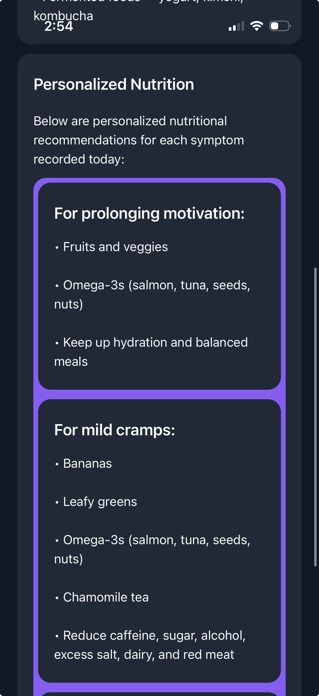
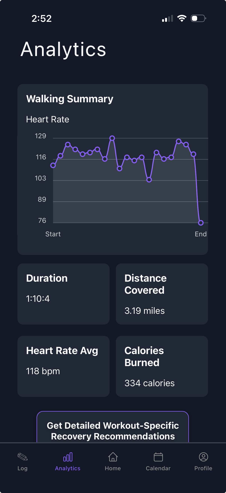
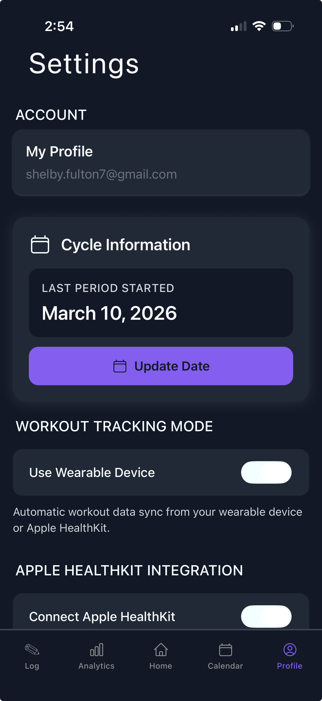

Shelby Fulton
Astrid Athletics
While at Princeton, I founded Astrid Athletics, a startup built by female athletes for female athletes. Women are often trained as if they are no different than men, but there is one key difference: the menstrual cycle. Something that is often considered taboo to discuss and often ignored completely, yet has such a large impact on athletic training and success.
Since January of 2024, I've been working to produce a cross-platform mobile app to help track athletes' training alongside menstrual cycle symptoms. This enables us to provide athletes with personalized recommendations on how to optimize their recovery, nutrition, training, and more based on their symptoms and where they are in their menstrual cycle.
I developed the front end using React Native and TypeScript with the backend built in Supabase. The app has been utilized by student athletes at the collegiate and Olympic level and has gained attention from one of the top three largest sports retailing companies in the world.
Important to note: The app was built on the foundation of preserving the most data privacy as possible. The optimal combination of accuracy in ML and privacy preservation was found and the app was built on this privacy foundation.
Below are screenshots from the app.








